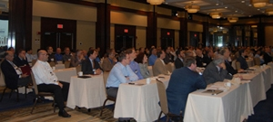
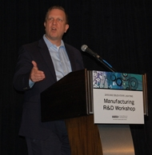
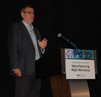
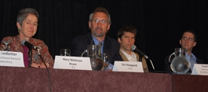
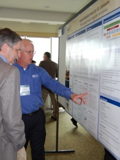
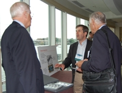
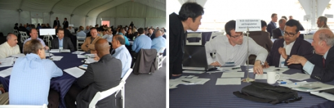
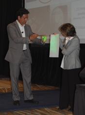

More than 150 industry leaders from across the country, representing every link in the supply chain—chip makers, luminaire manufacturers, material and equipment suppliers, packagers, luminaire testers, and makers of testing equipment—gathered in Boston June 5–6, 2013, to share insights, ideas, and updates at the fifth annual Solid-State Lighting Manufacturing R&D Workshop, hosted by DOE. The workshop is a key component of an initiative launched by DOE in 2009 to enhance the quality and lower the cost of SSL products through improvements in manufacturing equipment and processes, and to foster a significant manufacturing role in the U.S. This year in Boston, attendees explored a wide range of related topics and focused on reexamining and updating the DOE Manufacturing R&D Roadmap.
DOE SSL Portfolio Manager James Brodrick kicked off Day 1 by observing that solid-state lighting is starting to take off as a technology and is already having an impact, saving $675 million in energy costs in 2012 across nine applications analyzed in a recent DOE study. He added that those annual savings would jump to $37 billion if all nine applications switched entirely to LED.

Brodrick cited cost reductions as a key to SSL adoption, noting that they don't just happen but are the result of research and development. He said SSL manufacturers need to rethink the way things are done and how products are designed, and to come up with new manufacturing methods and materials. Referring to SSL products as a whole, Brodrick said, "It's not your grandfather's light bulb, so how can it be manufactured the same way?"
Dr. David Danielson, DOE Assistant Secretary for Energy Efficiency and Renewable Energy (EERE), followed with a keynote introduction. Citing the tremendous progress SSL has made over the past decade—as it's evolved from a curiosity confined to traffic signals, exit signs, and keychains to a viable technology on the verge of achieving cost-competitiveness for general illumination—he described several new EERE efforts that will help ensure that the U.S. gets its share of the SSL manufacturing pie. These include the Clean Energy Manufacturing Initiative, the National Network for Manufacturing Innovation, and a recent funding opportunity for a new Clean Energy Manufacturing Innovation Institute focused on wide bandgap semiconductor technology. Noting the impressive trends in SSL cost and efficacy, Dr. Danielson said they hint at amazing things to come.
Trends, Forecasts, and Lessons from Other Industries
Jed Dorsheimer of the investment bank Canaccord Genuity looked at current SSL market trends as well as where the industry is headed. He observed that although SSL adoption today is driven mainly by cost and energy efficiency, this will change once key cost and efficiency thresholds have been achieved. At that point, Dorsheimer said, energy efficiency will be taken for granted, and manufacturers will have an opportunity to really differentiate their products from other lighting technologies by means of controllability and other functions that result from SSL's digital nature. What we're seeing now, he predicted, is just the tip of the iceberg. Dorsheimer said the coming focus on functionality should ensure many new applications and billions of dollars of opportunity, without drastically changing the manufacturing supply chain.

Iain Black of Philips Lumileds described research his company is doing that may eventually do away with LED packaging in the traditional sense by integrating chips more closely with the luminaire, and then going further by putting the driver, optics, and controls directly on the chip. This would have major repercussions not only in terms of cost, but also in terms of form factor and environmental footprint. Black advocated taking a Lego approach to SSL manufacturing, in which there are a limited number of building blocks that can be configured in different ways to produce a wide range of SKUs. He also noted that the digital nature of SSL makes it fundamentally different from other lighting technologies. "There's a point where you have to think outside the bulb," Black said.
Ralph Tuttle of Cree identified innovation as one of the keys to his company's manufacturing success, along with automation and the strategy of design for manufacturing (DFM). One aspect of DFM, he said, is to keep the number of parts in a product to a minimum and to use them in as many other products as possible—a tactic that Cree used to design its recently introduced family of low-priced LED replacement lamps, and which echoes Black's Lego approach but at the end-product level. Another is to simplify assembly dramatically, which Tuttle demonstrated with Cree's recent A-lamp. He emphasized, though, that there's no single factor that drives the total cost of an LED lamp, and that incremental cost reductions across all items are necessary in order to bring the price down.
Rick Jarman of the National Center for Manufacturing Sciences focused on "smart" manufacturing, a term he said describes the intelligence of the process as well as the intelligence of the equipment. He predicted that we'll be seeing manufacturing equipment that's intelligent and can make changes on its own. Jarman said that smart manufacturing would add $15 trillion to the global GDP, would raise the average U.S. annual salary by $25,000, and would also use significantly less energy. He pointed out that when it was first invented, Thomas Edison's light bulb was a "product without a platform," and that "Edison couldn't do it alone—he needed a group of people around him to collaborate."
Manufacturing Cost Impacts of Testing and Modeling
A panel moderated by Marc Ledbetter of Pacific Northwest National Laboratory explored ways to minimize the testing time and cost required to demonstrate performance and compliance with listing requirements. Consultant Mary Matteson Bryan offered a utility's perspective on the topic of testing LED lighting products. She noted that successful utility energy efficiency programs require accurate estimates of energy use and measured life to meet regulatory requirements, and that these estimates are validated through testing. Bryan explained that it's important to test LED lighting products to help separate the good from the bad, because SSL is an emerging and rapidly changing technology. She said utilities don't want to be in the testing business, but instead rely on third-party testing programs such as ENERGY STAR, the DesignLights Consortium, and LED Lighting Facts.

Eric Haugaard of Cree discussed the cost impacts of testing and modeling LED luminaires from a manufacturer's point of view. He explored the topic of LED luminaire photometric testing, focusing on LM-79 data, and compared absolute and relative photometry for use with high-intensity discharge and LED lighting systems. Haugaard considered LED luminaire performance versatility, focusing on the driver and the lamp package, and pointed out that SSL technology allows for application fine-tuning, with many more optical-distribution choice possibilities as well as smaller luminous intensity increments, resulting in thousands of possible luminaire configurations. He questioned whether these all need to be tested. Haugaard also compared LED luminaire photometric scaling with the correlation method and showed that the latter results in fewer errors.
Jeremy Yon of Litecontrol discussed some of the unique issues involved in testing OLED products, as encountered by an Illuminating Engineering Society (IES) technical procedures committee investigating the topic. He noted that optical measurements of OLED panels will be included in the next IES LM-79 revision and will cover flux, current, voltage, and chromaticity as well as the impacts of input power type, temperature control, operating position, stabilization, light leak/edge light, and measurement equipment. Of these, Yon said temperature control, operating position, and light leak/edge light are the most problematic. He also discussed OLED luminance uniformity and angular color uniformity.
Fred Proctor of the National Institute of Standards and Technology discussed product modeling and process modeling, and how the two differ from one another. He noted that process modeling—which is done at various levels (e.g., facility, unit process, and physics levels)—supplements product modeling and is carried out to understand the impact of manufacturing or assembly changes on the final product, as well as to predict the impact of such changes on the process and to minimize the need for additional process testing. Proctor observed that populating these models is difficult, due to the often manual nature of data collection, and that standards to automate data collection will help. He said that using modeling and simulation may one day obviate the need for testing, even for high-confidence applications like certification.
Research Updates

The next session began with Brodrick presenting an overview of DOE's SSL manufacturing R&D portfolio, budget, and areas of focus. He noted that, at Congressional direction, about three-fourths of DOE's SSL R&D budget for 2013 is aimed at manufacturing. To help guide workshop discussions about which focus areas are already well-covered and which should be future priorities, Brodrick observed that to date, more than one-third of all DOE SSL R&D manufacturing projects have focused on the development of tools for LED epitaxial growth and about one-fifth on OLED manufacturing processes and yield improvement, with the rest focusing on such aspects as LED luminaire/module manufacturing and OLED substrate and encapsulation materials manufacturing. Brian Dotson of the National Energy Technology Laboratory then introduced the recipients of DOE's current SSL manufacturing R&D awards, whose representatives presented brief project updates that served as introductions to their posters at the evening reception. These projects range in focus from epitaxy tools and integrated LED troffers to OLED manufacturing pilot lines and reflect DOE's commitment to accelerate the adoption of SSL technology through manufacturing improvements that reduce costs and improve quality:
- Frank Cerio of Veeco Instruments discussed his company's attempts to reduce epitaxy costs and increase LED efficiency by developing a sputtering (physical vapor deposition) tool for depositing aluminum nitride buffer layers on LED substrates.
- Mike Hack of Universal Display Corporation (UDC) discussed his company's project to set up a pilot OLED manufacturing line in the U.S. that will provide prototype lighting panels to U.S. luminaire manufacturers and facilitate the growth of the embryonic OLED lighting industry.
- Paul Fini of Cree described his company's efforts to develop a low-cost, high-efficacy LED architectural troffer suitable for commercial and retail indoor lighting applications.
- Mark McCord of KLA-Tencor Corporation discussed his company's project to develop a better tool for hot-testing of LEDs, which will allow for better color control at actual operating temperature and may also enable better manufacturing process control.
- Brendan Moran of Philips Lumileds described his company's use of nitride epitaxy on 150mm patterned sapphire substrates to produce low-cost, warm-white, high-performance illumination-grade LEDs.
- "Raj" Rajeswaran of Moser Baer Technologies talked about how his company is leveraging its experience with OLED displays to reduce the cost of OLED lighting through yield improvement, using UDC's proprietary OLED technology.

Attendees had additional opportunities for discussion, information exchange, and potential partnering at the poster session and reception sponsored by the Next Generation Lighting Industry Alliance (NGLIA), an alliance of for-profit corporations formed to accelerate SSL development and commercialization through government-industry partnership. The reception featured posters on the DOE-funded SSL manufacturing R&D projects as well as on two recent DOE reports and RTI's work on behalf of the DOE LED Systems Reliability Consortium—plus a number of hands-on tabletop exhibits of SSL products demonstrating innovative materials and design for manufacturing. The 2013 Project Portfolio provides more on each of the current DOE SSL projects.
Updating the SSL Manufacturing R&D Roadmap
At the end of Day 1 of the workshop, Fred Welsh of Radcliffe Advisors set the stage for the following day's efforts to update the DOE SSL Manufacturing R&D Roadmap, by outlining feedback from roundtable discussions on the topic that were held in March 2013. He focused on nine key questions that had been discussed at those roundtables, and then layered this information on cost figures from the current DOE SSL R&D Multi-Year Program Plan, urging attendees to consider this as food for thought. Then, on Day 2 of the workshop, attendees split up into separate LED and OLED track sessions. The LED track session focused on future LED manufacturing challenges and explored R&D opportunities that could lead to a step change in manufacturing efficiency and cost reduction. The OLED track session focused on strategies to reduce the cost of OLED manufacturing and explored the status of OLED manufacturing from a global perspective. Later in the day, attendees split into even smaller groups that each focused on a specific priority topic. The input from these track and topic table sessions will be used to update the SSL Manufacturing R&D Roadmap and guide DOE planning for Manufacturing R&D solicitations. DOE expects to publish the updated roadmap in September and to issue the next Manufacturing R&D solicitation later in 2013.

LED Chip Manufacturing and Standards
Tom Morrow of SEMI reviewed the global outlook for LED chip manufacturing. Making the point that the need for capital equipment may be abating, he noted that overcapacity and margin pressure are dampening investment incentives, and that the industry is skeptical about the prospects of growing gallium nitride on silicon substrates but is awaiting the results of work along those lines being done by several companies. Morrow also updated the audience on SEMI's SSL manufacturing standards initiative, which includes task forces on high-brightness LED wafers, impurities and defects, equipment automation, and LED safety. He noted that the initiative has published SEMI HB1-0113, "Specifications for Sapphire Wafers Intended for Use for Manufacturing High Brightness-Light Emitting Diode Devices," and recently approved SEMI Draft Document 5420A, "Specification for 150 mm Open Plastic and Metal Wafer Cassettes Intended for Use for Manufacturing HB-LED Devices."
New Manufacturing Materials and Methods

A final panel moderated by Morgan Pattison of SSLS Inc. shared various perspectives on new materials and methods for SSL manufacturing that will enable a significant ramp-up in production. Jose Sierra of Lighting Science Group discussed the methodology his company uses to develop and introduce high-quality, manufacturable new SSL products at a rapid pace. He described how this requires favoring experimentation over elaborate planning, soliciting feedback from customers rather than intuitively trying to address their needs, and designing products iteratively instead of developing them the traditional way. Sierra stated that the demand for new and innovated products is going to intensify as competition heats up, and observed that his company's goal is to cut the time to release a new product by 50 percent. He noted that roughly 70 percent of total product cost is driven by design decisions.
Imro Wong of LUXeXceL focused on what he called the digital revolution, of which solid-state lighting is a key part. He described the advantages of the digital nature of his company's technology, which creates LED optics by depositing droplets of liquid polymer. Wong emphasized that while cost reduction is crucial for market adoption, it's important that SSL manufacturers also differentiate their products by providing customers with uniqueness, which comes in large part from being digital—and that the main hurdle in that regard is imagination. Focusing only on the bottom line, he said, ignores a key part of the SSL value proposition.
Brad Koerner of Philips Lighting brought the workshop to a fitting close with a tantalizing glimpse into SSL's near future. Pointing out that today's fixture formats are a legacy of the gaslight era, he predicted that we'll see lighting integrated into mass-customized architectural ceiling and wall systems, and that light itself will be processed as a material, much as we process a sheet of gypsum board. Koerner also predicted the increasing importance of "deep-green" sustainability and raised the question of whether lighting products can be made of renewable or recyclable materials instead of the customary steel, aluminum, and plastic.
Brodrick concluded the two-day workshop by thanking attendees for their input and participation. He noted an additional DOE SSL workshop in 2013—the SSL Market Introduction Workshop in November, to be held in Portland, OR—and encouraged attendees to stay apprised of DOE SSL program activities via the SSL website.